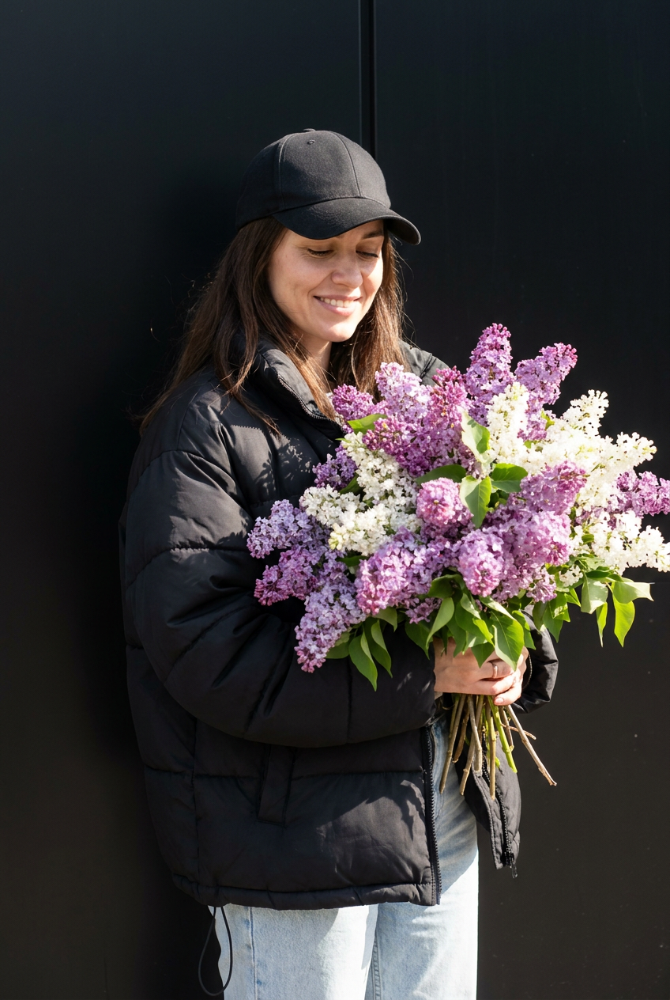
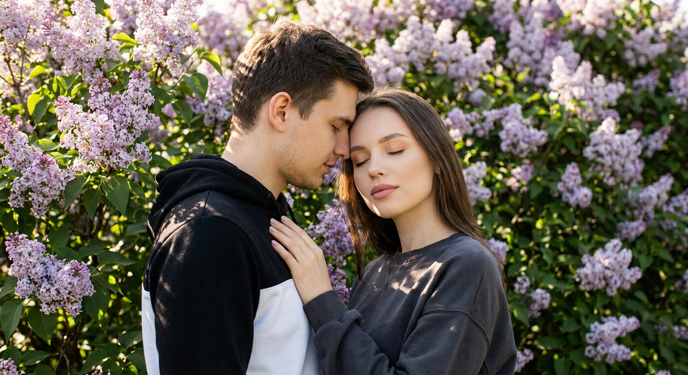
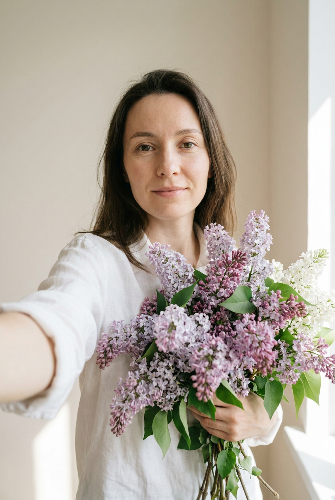
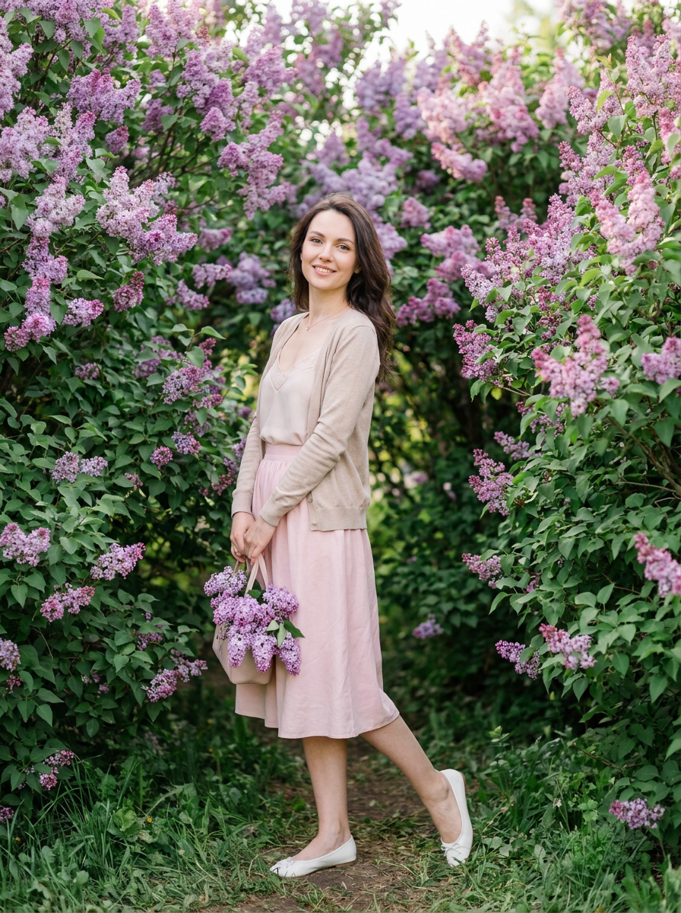
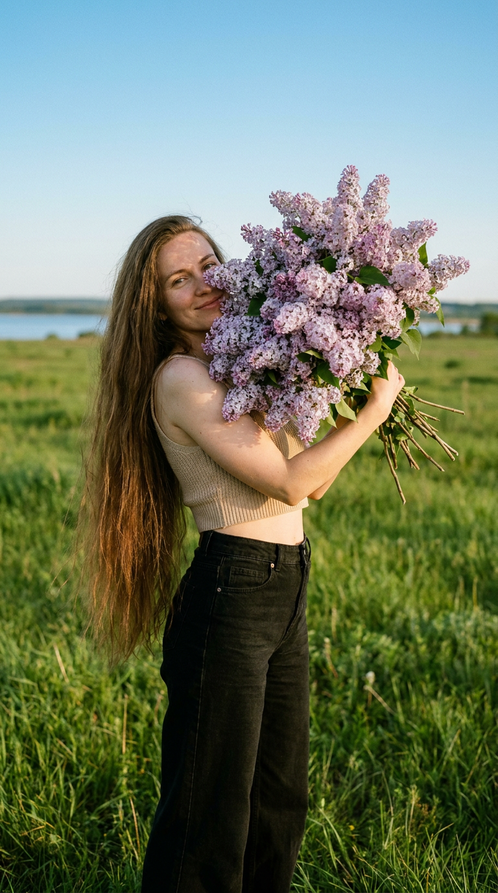
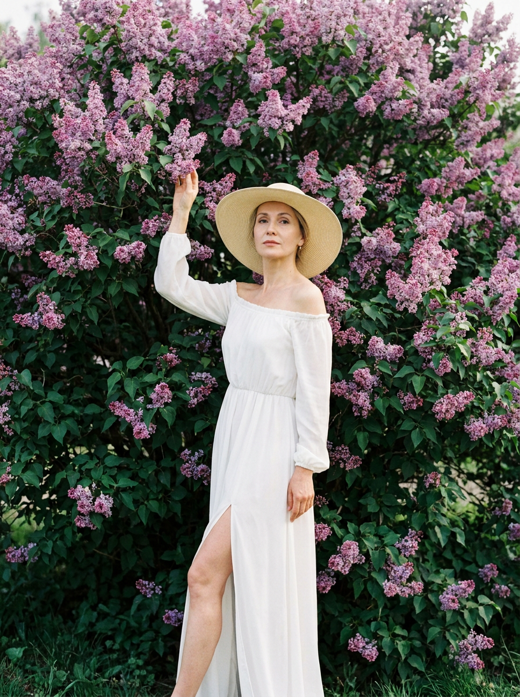
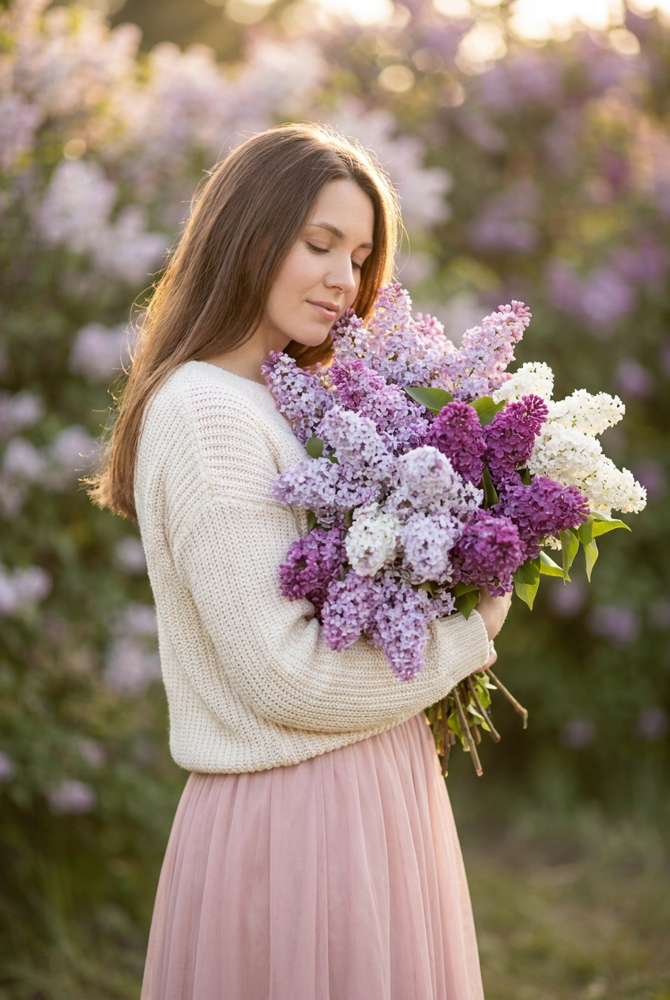
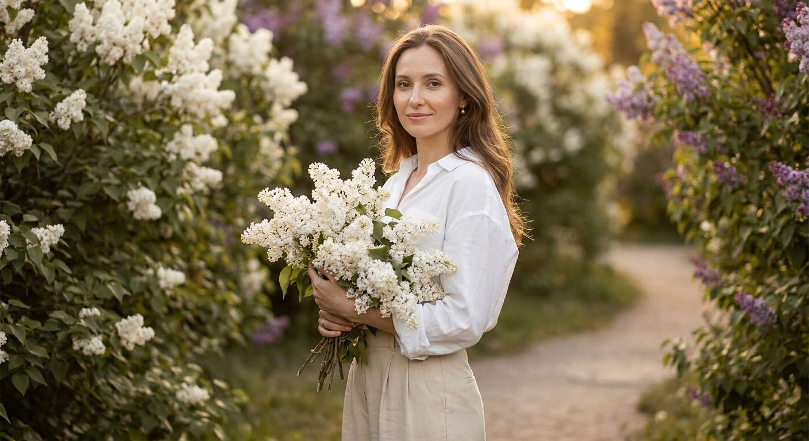
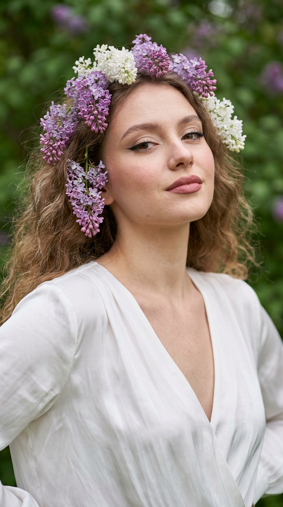
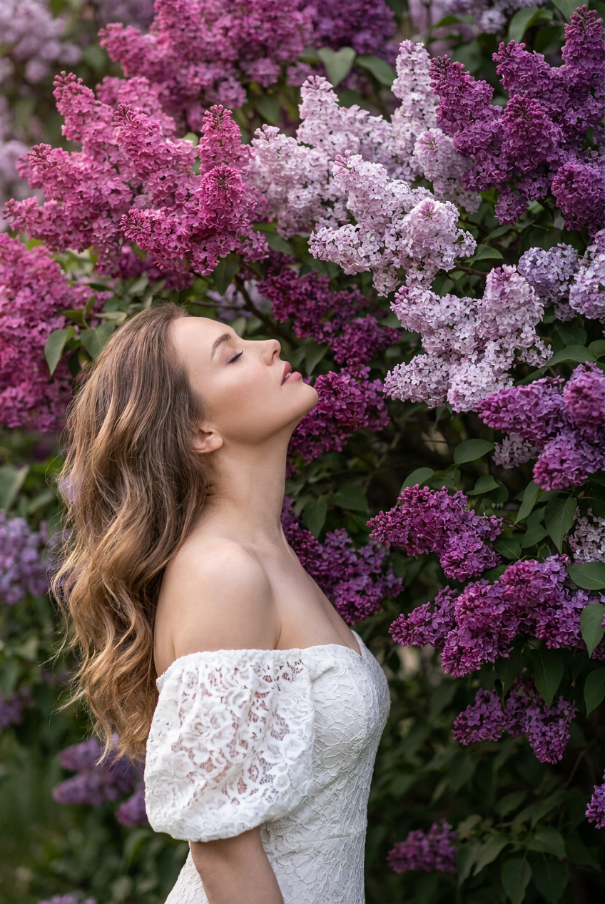

ИИ-Фото с сиренью: 10 промптов для нейросети

Сирень легко превращает кадр в романтичную открытку, но генератор нередко путает пальцы, меняет черты лица и делает цветы похожими на разноцветные шарики. Хороший промпт помогает заранее задать позу, одежду, свет, композицию и настроение, чтобы получить фотографию, а не случайную иллюстрацию.
В подборке — 10 сценариев для ИИ-фото с сиренью: от уличного casual-портрета и домашнего селфи до съёмки в саду, на лугу и у воды. Здесь есть идеи для личного референса лица, парного кадра, fashion-образов, венка из цветов и выразительного профиля.
Как сгенерировать такое фото: пошагово
Нужен снимок анфас при ровном свете, лицо в кадре целиком, без тёмных очков и головных уборов. Разрешение от 1000 пикселей по короткой стороне. Чем чётче исходник, тем точнее модель повторит черты.
Выберите сценарий ниже и нажмите «Копировать» — текст уйдёт в буфер целиком, вместе с командой сохранения внешности. Эта команда стоит первой строкой и отвечает за то, чтобы на выходе было ваше лицо, а не случайное.
Кнопка «Сгенерировать» рядом с каждым промптом открывает модель в новой вкладке. Nano Banana Pro работает с референсом лица — в отличие от моделей, которые генерируют портрет с нуля и узнаваемость теряют.
Промпт — в поле ввода, портрет — через загрузку референса. Порядок значения не имеет, но без референса команда сохранения внешности работать не будет: модели нечего сохранять.
Для сторис и ленты берите 9:16, для превью и обложек — 4:3. Первый результат редко идеален: если поза или свет ушли не туда, поправьте соответствующую часть промпта и запустите заново. Обычно хватает двух-трёх итераций.
10 промптов для генерации
1. Уличный портрет с букетом
Строго сохранить внешность по загруженному референсу: черты лица, пропорции, мимику и текстуру кожи без изменений. Фотореалистичный lifestyle-портрет девушки с лицом по референсу на улице, рядом с гладкой чёрной стеной или тёмной минималистичной поверхностью. На ней объёмная чёрная куртка или худи, светлые джинсы, расслабленный casual street-style. Девушка держит огромный роскошный букет сирени, почти закрывающий половину тела. Она слегка улыбается, глаза прикрыты или опущены; выражение мягкое, спокойное и трогательное, будто цветы только что подарили. Корпус немного развёрнут в сторону, голова чуть наклонена. Тёмные или светло-каштановые распущенные волосы выглядывают из-под кепки и лежат на плечах. Натуральный макияж, ровная кожа, лёгкий румянец, естественные губы. Яркий дневной свет, солнечный блик, мягкие тени, реалистичная текстура кожи, естественные пропорции, высокая детализация.
2. Пара среди цветущих кустов

Строго сохранить внешность по загруженному референсу: черты лица, пропорции, мимику и текстуру кожи без изменений. Крупный фотореалистичный кадр на уровне глаз: мужчина и женщина стоят вплотную среди густых цветущих кустов сирени. Их головы наклонены друг к другу и соприкасаются, рука мужчины лежит на плече женщины. Она слегка откидывает голову, глаза закрыты, лицо расслабленное и спокойное. В кадре — лица и верх плеч, фигуры находятся по центру, ветки сирени частично проходят на переднем плане. На мужчине чёрная хлопковая худи с капюшоном и белой вставкой на груди, на женщине свободный тёмно-серый свитшот из мягкого трикотажа. У женщины ровный матовый тон кожи, нежно-розовые матовые губы, тёплые бежево-персиковые тени и естественно разделённые ресницы. Фон полностью заполнен зелёной листвой и соцветиями светло-фиолетового и лилового оттенков, мягкое естественное освещение.
3. Домашнее селфи с сиренью

Строго сохранить внешность по загруженному референсу: черты лица, пропорции, мимику и текстуру кожи без изменений. Уютный фотореалистичный селфи-портрет девушки с лицом по референсу, снятый на фронтальную камеру в светлой минималистичной комнате. Девушка стоит близко к объективу, одна рука вытянута вперёд, чтобы сохранить эффект настоящего селфи. На ней свободная белая рубашка или домашний костюм из мягкой ткани. Макияж свежий и естественный: ровный тон, выразительные брови, мягкая подводка, длинные ресницы, нюдовые губы и лёгкое сияние кожи. Девушка прижимает к груди огромный букет сирени: густые ветки лилового, сиреневого, розовато-фиолетового и белого цвета, зелёные листья и хорошо видимые стебли. Букет пышный, свежий, частично закрывает тело. Взгляд прямо в камеру, выражение спокойное, уверенное и немного мечтательное. Мягкий дневной свет из окна, натуральная кожа, реалистичная фронтальная перспектива.
4. Весенний сад и пастельный образ

Строго сохранить внешность по загруженному референсу: черты лица, пропорции, мимику и текстуру кожи без изменений. Вертикальная фотореалистичная фотография девушки в полный рост среди густых кустов цветущей сирени. Используй лицо с референса без изменения формы глаз, носа, губ и овала. На девушке светло-розовая юбка, светлый топ на тонких бретелях, бежевый кардиган и белые балетки; в руке небольшая сумка с ветками сирени. Поза естественная: одна нога слегка согнута и отведена назад, корпус мягко повёрнут, на лице лёгкая улыбка. Вокруг — пышные фиолетово-розовые соцветия и зелёная листва, романтичный весенний сад. Мягкий дневной свет, пастельная палитра, воздушное настроение, красивое размытие фона. Стиль editorial fashion photo, cinematic, ultra realistic, high detail, natural skin texture, объектив 85 мм, f/1.8, малая глубина резкости, вертикальный формат 3:4. Негативный промпт: искажённое или чужое лицо, лишние пальцы и конечности, деформация тела, размытое лицо, пластиковая кожа, мультяшность.
5. Сирень на фоне воды

Строго сохранить внешность по загруженному референсу: черты лица, пропорции, мимику и текстуру кожи без изменений. Фотореалистичный вертикальный портрет 9:16 с лицом по референс-фотографии: сохранить овал лица, нос, брови, губы, цвет глаз, длину и оттенок волос. Девушка с очень длинными распущенными волосами стоит на широком зелёном лугу в золотой час. На горизонте видна гладь воды, выше — чистое голубое небо. В руках она держит огромный пышный букет светло-лиловой сирени, частично закрывающий лицо; руки обхватывают цветы, улыбка мягкая и естественная. В кадре видны бежевый кроп-топ и высокие чёрные широкие джинсы. Центральная композиция, лёгкий ракурс сверху, фокус одновременно на лице и букете. Плёночная эстетика Kodak Portra, мягкая зернистость, тёплый смешанный баланс белого. Камера Phase One IQ4, объектив 80 мм f/2.8, диафрагма f/2.8–f/4, реалистичная фактура кожи и цветов.
6. Белое платье у сирени

Строго сохранить внешность по загруженному референсу: черты лица, пропорции, мимику и текстуру кожи без изменений. Вертикальная fashion-фотография девушки в полный рост перед огромным кустом цветущей сирени. Лицо по референсу, без изменения черт, возраста, овала, глаз, носа и губ. Фон почти полностью занимают пышные лилово-розовые соцветия и тёмная зелень. На девушке длинное белое платье в пол с высоким разрезом, открытыми плечами и длинными рукавами, на голове широкополая светлая шляпа. Одной рукой она касается ветки сирени, вторая свободно опущена; одна нога выставлена вперёд, поза изящная и женственная. Мягкий естественный дневной свет, романтичная весенняя атмосфера, натуральная кожа, правильные пропорции, лёгкое размытие заднего плана. Editorial fashion, cinematic, ultra realistic, high detail, объектив 85 мм, shallow depth of field, вертикальный формат 3:4. Негативный промпт: другое или искажённое лицо, лишние пальцы, конечности и детали тела, пластиковая кожа, неестественная анатомия, мультяшный стиль.
7. Мечтательный букет в саду

Строго сохранить внешность по загруженному референсу: черты лица, пропорции, мимику и текстуру кожи без изменений. Фотореалистичный женский портрет на улице, в саду с цветущей сиренью; внешность и лицо точно соответствуют загруженному референсу, без изменения возраста, формы глаз, носа, губ, овала, подбородка, цвета и длины волос. Девушка стоит в полуобороте, корпус направлен чуть в сторону, голова мягко опущена к букету, взгляд вниз, глаза почти закрыты. Выражение нежное, умиротворённое и мечтательное. В руках — огромный густой букет с живыми стеблями и детально прорисованными кистями сирени светло-фиолетового, лавандового, сиреневого, насыщенно-пурпурного и белого оттенков. Цветы находятся на переднем плане и частично закрывают фигуру. Фон — зелёная листва и другие кусты сирени, мягко размытые. Естественный дневной свет, натуральная кожа, фотореализм, высокая детализация, спокойная романтичная цветовая гамма.
8. Quiet luxury в сиреневом саду

Строго сохранить внешность по загруженному референсу: черты лица, пропорции, мимику и текстуру кожи без изменений. Эстетичный фотореалистичный портрет молодой женщины в цветущем весеннем саду, лицо сохранить 1:1 по референсу. Девушка стоит в пол-оборота и прямо смотрит в камеру, удерживая огромный пышный букет белой сирени. На ней свободная белая рубашка из лёгкого натурального хлопка с немного расстёгнутым воротом и мягкие светло-бежевые широкие брюки с высокой посадкой — расслабленный образ в эстетике quiet luxury. Длинные гладкие волосы распущены, уложены естественными волнами с лёгким объёмом; тонкие пряди обрамляют лицо. В ушах лаконичные жемчужные серьги-пусеты. Позади — густые кусты белой и сиреневой сирени и извилистая садовая дорожка, уходящая в расфокус. Тёплый золотистый свет заката создаёт мягкое свечение кожи и блики на волосах. Натуральная фактура, чистая композиция, дорогая спокойная цветовая палитра, реалистичная фотография.
9. Венок из сирени крупным планом

Строго сохранить внешность по загруженному референсу: черты лица, пропорции, мимику и текстуру кожи без изменений. Вертикальный крупный портрет 9:16, кадр от середины груди, девушка по центру, голова слегка повернута вправо. В её волосы вплетён венок из сирени, несколько соцветий свисают к виску и уху. Она прямо смотрит в объектив, подбородок немного поднят, плечи расслаблены, руки остаются за пределами кадра. На девушке белая шелковая блуза с глубоким V-образным вырезом, открывающим шею и плечи; ткань струится вертикальными складками и имеет мягкий глянец. Выражение спокойное, с лёгкой полуулыбкой. Макияж подчёркивает глаза и скулы: естественная кожа с видимой текстурой и порами, лёгкий румянец, графичная чёрная подводка с растушёвкой к внешнему уголку, объёмные ресницы, матовые нейтрально-бежевые тени, тёплый скульптурирующий румянец. Фон — размытая зелёная листва с фиолетовыми пятнами, мягкий рассеянный свет, высокая детализация и натуральный фотореализм.
10. Созерцание среди соцветий

Строго сохранить внешность по загруженному референсу: черты лица, пропорции, мимику и текстуру кожи без изменений. Вертикальный фотографический портрет высокого разрешения, где женщина находится на фоне густой сирени. Около 85% композиции занимают крупные сферические грозди оттенка маджента, светлой лаванды и тёмного фиолетового; они заполняют верхнюю и правую части кадра. Женщина расположена в нижнем левом квадранте и показана в профиль. Её торс слегка отклонён назад, голова запрокинута вверх примерно на 45 градусов, глаза закрыты, губы чуть приоткрыты — выражение спокойное и созерцательное. Волосы свободно ниспадают мягкими волнами до середины спины и ловят рассеянный свет. На ней белое кружевное платье с открытыми плечами и объёмными рукавами, облегающее фигуру. Освещение мягкое, без жёстких теней, с нежными бликами на волосах и лепестках. Камера на уровне глаз, умеренный телеобъектив, малая глубина резкости, натуральные детали цветов и кожи.
Что важно учесть в этом стиле
Сирень должна оставаться узнаваемой: укажите оттенки, размер букета, плотность соцветий, видимые стебли и листья. Если цветов слишком много, генератор может превратить их в бесформенное пятно, поэтому полезно отдельно описывать, какую часть тела они закрывают.
Для портрета задавайте не только внешность, но и направление взгляда, положение головы, поворот корпуса и выражение лица. Технические детали вроде объектива 85 мм, диафрагмы f/1.8 или формата 9:16 помогают удержать композицию, но не заменяют описание сцены.
Идеи для вариаций
- Замените букет на одну ветку сирени, заправленную за ухо.
- Перенесите съёмку в старую оранжерею с оконным светом.
- Добавьте прозрачный зонт после лёгкого весеннего дождя.
- Сделайте вечерний кадр с гирляндой в глубине сада.
- Попробуйте чёрно-белую плёночную обработку, оставив сирень цветной.
- Поменяйте одежду на лавандовый костюм, джинсовую куртку или винтажное платье.
Как собрать свой промпт
Сначала задайте тип кадра и композицию: крупный портрет, полный рост, селфи, профиль или формат 9:16. Затем опишите локацию, одежду, позу, мимику и положение цветов. Для референса лица добавьте требование сохранить узнаваемые черты, но не перегружайте запрос повторяющимися формулировками.
В конце укажите свет, объектив, глубину резкости и стиль обработки. После первой генерации меняйте по одному параметру: например, оставьте позу, но замените дневной свет на золотой час. Для сложной сцены закладывайте 3–6 попыток и проверяйте лицо, кисти, края одежды, стебли и повторяющиеся соцветия.
Ошибки, из-за которых кадр не получается
- Слишком общий запрос. Без позы, света и композиции нейросеть выбирает случайный ракурс.
- Противоречивые детали. Например, одновременно указаны крупный план и полный рост.
- Перегруженный букет. Уточняйте его размер и часть тела, которую он закрывает.
- Нет негативного промпта. Для портретов отдельно запретите лишние пальцы, чужое лицо и пластиковую кожу.
- Слепое доверие к референсу. Даже хороший исходник может дать другое лицо, поэтому проверяйте несколько вариантов и усиливайте описание ключевых черт.
Частые вопросы
Как сделать такое ИИ-фото бесплатно?
Для первых попыток подойдут Kandinsky и Шедеврум: они позволяют генерировать изображения без оплаты, но могут ограничивать число запросов, скорость и точность работы с лицом. Krea AI и Arena.ai удобны для экспериментов с разными моделями, однако бесплатный доступ, очередь и функции референса могут меняться. Ни один сервис не гарантирует идеальное сходство: иногда потребуется несколько генераций и ручная доработка.
Как сохранить лицо по референсу?
Загрузите хорошо освещённый портрет без сильного фильтра и явно укажите, какие черты нельзя менять: овал, глаза, нос, губы, линию подбородка, возраст и волосы. Если сервис поддерживает силу влияния референса, начинайте со среднего значения: слишком сильное может испортить позу, слишком слабое — изменить лицо.
Почему сирень получается искусственной?
Генератор часто упрощает мелкие цветки, когда в промпте указан только цвет. Добавьте густые кисти, отдельные маленькие цветки, живые стебли, зелёные листья, естественную неоднородность и фокус на букете. Также помогает умеренная глубина резкости вместо сильного размытия всего фона.
Какой формат выбрать для публикации?
Для сторис и вертикальных постов используйте 9:16 или 4:5, для редакционных портретов — 3:4. Крупному лицу подойдут кадры от груди, а для образа с платьем и садом лучше сразу просить полный рост. Формат желательно задать в начале или в конце промпта и проверить, чтобы генератор не обрезал букет и обувь.